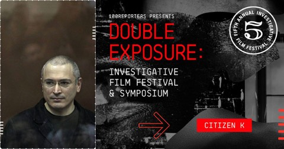

Russia & Eastern Europe
Russia, Ukraine, Belarus and the former Soviet states.
11 films · 8 sessions · 44 people
Often together with: War, conflict & the militaryDemocracy & electionsCorruption & powerLegal & safety for reportersWhistleblowers & leaksTerrorism & national security
Films
- An Unknown SubstanceSteven Leckart · Maia Wikler2026 · 39 min
- Short Strand: Against the GrainSteven Leckart · Maia Wikler2026
 The Oligarch and the Art DealerAndreas Dalsgaard2026 · 120 min
The Oligarch and the Art DealerAndreas Dalsgaard2026 · 120 min- 23Milan M.A. Gonzales2023 · 10 min
- The Price of Truth, Director’s CutPatrick Forbes2023 · 85 min
 Mariupolis 2Mantas Kvedaravičius2022 · 112 min
Mariupolis 2Mantas Kvedaravičius2022 · 112 min The New Greatness CaseAnna Shishova-Bogolyubova2022 · 96 min
The New Greatness CaseAnna Shishova-Bogolyubova2022 · 96 min United States vs. Reality WinnerOPENING NIGHT: United States vs. Reality Winner2021 · 94 min
United States vs. Reality WinnerOPENING NIGHT: United States vs. Reality Winner2021 · 94 min- Welcome to Chechnya: Inside The Russian Republic’s Deadly War On GaysWelcome to Chechnya2020 · 107 min

Citizen KAlex Gibney2019 · 128 min- Our New PresidentMaxim Pozdorovkin2018 · 12 min
Sessions
- 2026 · Fri Nov 6 · 2:45pmPanelDX Academy Masterclass: The Making of The Oligarch and the Art Dealer and Rescue, with Andreas DalsgaardAndreas Dalsgaard, Sig Libowitz
- 2022 · Thu Oct 13 · 10:00 AMConversation · DX²Opening Conversation: The Making of NavalnyDaniel Roher, David Filipov, Maria Pevchikh
- 2022 · Fri Oct 14 · 2:00 PMPanel · DX²Vanishing Act: Capturing the Death of DemocracyVasily Polonsky, Ricardo Sandoval-Palos, Corinne van Egeraat, Drew Sullivan
- 2021 · Wed Oct 13 · 9:45amPanelHARDBALL SEASONJames Harkin, Tiffany Sia, Laurent Richard, Drew Sullivan, Pádraig Hughes
- 2021 · Wed Oct 13 · 3:30pmPanelThe Surveillance TrilogyKatherine Fehr Chandler, Jesselyn Radack, Ines Hofmann Kanna, Sonia Kennebeck, Katie Townsend
- 2018 · Thu Oct 11 · 11:00 AMPanelPivot: The Unexpected MomentMarcia Davis, Paco De Onís, Bridget Hunnicutt, Patrick Radden Keefe, Gordon Witkin, Pamela Yates
- 2017 · Thu Oct 19 · 4:15 PMConversationClosing Conversation - Gimme Shelter: Icarus and The New York TimesDan Cogan, Bryan Fogel, Rebecca Ruiz, Edwin Rios
- 2016 · Fri Oct 7 · 1:45 PMPanelSpilling the Secrets of Secrecy JurisdictionsElisabeth Bumiller, Jake Bernstein, Catherine Dunn, Marina Walker Guevara, David LeLoup
People most involved
 Vasily PolonskyFilm subject, panelist · 2022
Vasily PolonskyFilm subject, panelist · 2022 Steven Leckart · Maia WiklerFilmmaker · 2026
Steven Leckart · Maia WiklerFilmmaker · 2026 Andreas DalsgaardFilmmaker, panelist · 2026
Andreas DalsgaardFilmmaker, panelist · 2026
- Maxim PozdorovkinFilmmaker, panelist · 2018
- Alex GibneyFilmmaker, panelist · 3 editions, 2015–2019
 Anna Shishova-BogolyubovaFilmmaker · 2022
Anna Shishova-BogolyubovaFilmmaker · 2022- Mantas KvedaravičiusFilmmaker · 2022
 Patrick ForbesFilmmaker · 2023
Patrick ForbesFilmmaker · 2023 David HerszenhornModerator · 2023
David HerszenhornModerator · 2023- Milan M.A. GonzalesFilmmaker · 2023
- OPENING NIGHT: United States vs. Reality WinnerFilmmaker · 2021
- Welcome to ChechnyaFilmmaker · 2020
- Jake BernsteinPanelist · 2016
- David LeLoupFilmmaker, panelist · 2016
- Bryan FogelPanelist · 2017
- Marcia DavisModerator, panelist · 2018

- Patrick Radden KeefePanelist · 2018
- Daniel RoherPanelist · 2022


 Sig LibowitzModerator, panelist, workshop leader · 3 editions, 2024–2026JHU AAP Graduate Film and Media Program
Sig LibowitzModerator, panelist, workshop leader · 3 editions, 2024–2026JHU AAP Graduate Film and Media Program Katherine Fehr ChandlerPanelist · 2021
Katherine Fehr ChandlerPanelist · 2021